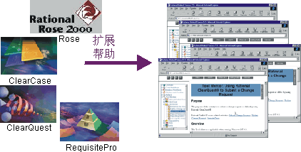

| 流程指导信息 |
 |
|
主要描述
 Rational 工具的用户可以访问 Rational Unified Process 的上下文相关帮助链接。 Rational 工具中的上下文相关帮助将帮助您查找 Rational Unified Process（RUP）中与您的当前任务相关的页面。 在 Rational 工具中工作时，“扩展帮助”工具可提供关于正在执行的任务的更多信息。扩展帮助工具提供对 RUP 上主题的链接，包括关于相关概念的指导信息、适用的流程活动、工作指南和附加信息。扩展帮助是可配置的，允许 Rational 客户在公司内部网上或在 Web 上添加他们自己对流程中信息的链接。定制信息在 Rational Suite 文档中提供。 扩展帮助可通过每个 Rational 工具的“帮助”菜单进行访问。 |
© Copyright IBM Corp. 1987, 2006. All Rights Reserved. |